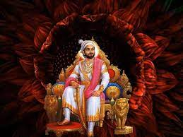

CHATRPATI SHIVAJI MAHARAJ
(1630-1680)
Founder of the Maratha Empire:
Chhatrapati Shivaji Maharaj established the Maratha Empire in the 17th century, which later became a powerful force in the Indian subcontinent.In 1674, Shivaji Maharaj was formally crowned as the Chhatrapati, which means "paramount sovereign." This event, held at the Raigad Fort, symbolized his political independence and the official establishment of the Maratha Empire. Under his leadership and the subsequent rule of his successors, the Maratha Empire expanded its territories, becoming a significant power in the Indian subcontinent during the 18th century.Shivaji Maharaj's legacy includes his military and administrative reforms, his emphasis on religious tolerance, and his enduring impact on Indian history. He is widely regarded as a national hero in India and is celebrated for his role in founding the Maratha Empire.
Father of the Indian Navy:
Chhatrapati Shivaji Maharaj is known as the father of the Indian Navy. Shivaji Maharaj’s indomitable spirit, visionary leadership, and naval accomplishments have earned him the title of the Father of the Indian Navy. His strategic vision, construction of a formidable naval fleet, emphasis on maritime strength, and establishment of naval bases set the stage for India’s naval prominence in the centuries to come. Shivaji Maharaj’s contribution to the Indian Navy remains unparalleled, making him an iconic figure who shaped India’s maritime heritage and left an indelible mark on the nation’s naval history.
Founder of the Ganimi Kava warfare:
"Ganimi Kava," also known as "Ganimi Kawa," was the military strategy employed by Chhatrapati Shivaji Maharaj, the founder of the Maratha Empire, during his time. The term "Ganimi Kava" roughly translates to "guerrilla tactics" or "guerrilla warfare" in Marathi, the native language of the region.Under Ganimi Kava, Shivaji Maharaj and his forces utilized innovative guerrilla warfare techniques to resist and fight against larger and more powerful adversaries, including the Mughal Empire and the Sultanates of Bijapur and Golconda. These tactics were instrumental in Shivaji Maharaj's successful military campaigns and played a significant role in the expansion of the Maratha Empire.
Key aspects of Ganimi Kava included:
- Hit-and-Run Tactics
- Ambushes
- Mobility
- Fortification
- Local Support
- Naval Tactics
Biographies
- Chhatrapati Shivaji Maharaj’s life and rule
- ‘Shivaji and His Times’ by Jadunath Sarkar
- ‘Shivaji: The Great Maratha’ by Ranjit Desai
- ‘Challenging Destiny’ by Medha Deshmukh Bhaskaran
- 'Shivaji- His Life and Times' By Gajanan Bhaskar Mehendale
- 'Shivaji the Grand Rebel' by Dennis Kincaid